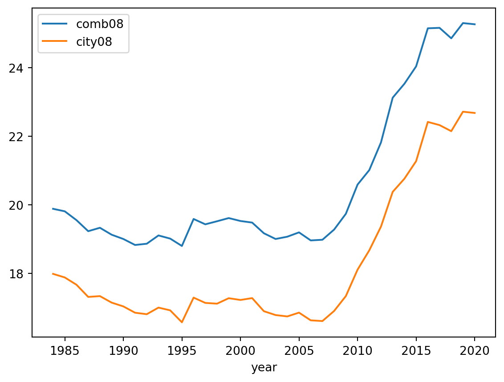
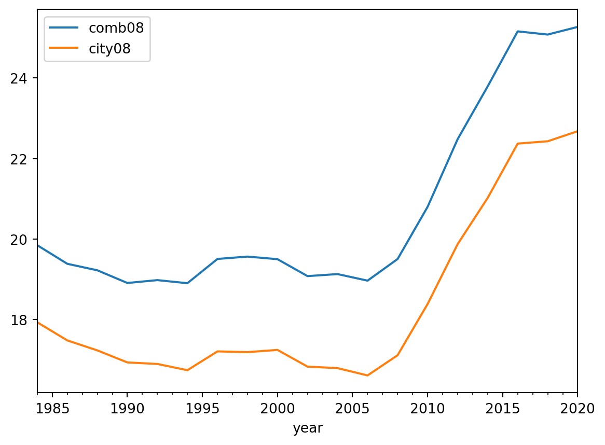

Code
import pandas as pd
import polars as pl
import polars.selectors as cs
import seaborn as sns
import matplotlib.pyplot as plt
pl.Config.set_tbl_rows(2) # limit the numbers of rows printedpolars.config.Config
In the ever-evolving field of data science, effective data manipulation tools are essential. Enter Polars, a Rust-based library garnering attention within the data community. Boasting impressive speed and versatile capabilities, Polars is redefining our data management practices. In this blog, we delve into Polars’ core functions and practical applications, shedding light on how it empowers data professionals to efficiently tackle complex tasks.
For those well-versed in Pandas, Polars offers a blend of familiarity and innovation. Although this document is not designed to substitute the official documentation, it serves as a tool to provide you with insights into the capabilities that polars offers. Our goal is to ensure the continuous updating of this document.
Our exploration of Polars is guided by insights from the Polars User Guide, Kevin Heavey’s perspectives in Modern Polars and Matt Harrison’s engaging tutorial on Polars at PyCon. We kickstart our exploration with Matt Harrison’s shared dataset, the US Department of Energy’s Automobile Fuel Economy data. Let’s begin this journey!
import pandas as pd
import polars as pl
import polars.selectors as cs
import seaborn as sns
import matplotlib.pyplot as plt
pl.Config.set_tbl_rows(2) # limit the numbers of rows printedpolars.config.ConfigWe are using Polars 0.18.8 for this demonstration.
pl.__version__'0.18.8'Given the large size of the dataset and the fact that some columns aren’t really useful for us, we’ll start by picking out the information we actually need. Feel free to use the code below to work with your dataframe.
df = pl.read_csv("vehicles.csv", null_values="NA")
# process and save parquet for later use
(
df.select(
pl.col(
"make",
"model",
"drive",
"cylinders",
"displ",
"fuelType",
"mpgData",
"city08",
"highway08",
"comb08",
"year",
)
)
.with_columns(
pl.col("make").cast(pl.Categorical, strict=False),
pl.col("model").cast(pl.Categorical, strict=False),
pl.col("drive").cast(pl.Categorical, strict=False),
pl.col("fuelType").cast(pl.Categorical, strict=False),
pl.col("cylinders").cast(pl.Int8, strict=False),
pl.col("displ").cast(pl.Float32, strict=False),
pl.col("mpgData").map_dict({"N": False, "Y": True}),
pl.col("city08").cast(pl.Int8, strict=False),
pl.col("highway08").cast(pl.Int8, strict=False),
pl.col("comb08").cast(pl.Int8, strict=False),
pl.col("year").cast(pl.Utf8).str.to_datetime("%Y").cast(pl.Date),
)
.write_parquet("vehicles.parquet")
)
df = pl.read_parquet("vehicles.parquet")Taking a closer look at the Polars namespace can be really helpful as you start to get to know the library. By exploring the functions, methods, and attributes available within the namespace, you’ll get a better sense of what the library can do. This exploration sets the groundwork for you to use the library more effectively and make the most of its features.
By issuing print(dir(pl)), we can explore the accessible functions within the namespace.
# available functions
print(dir(pl))['Array', 'ArrowError', 'Binary', 'Boolean', 'Categorical', 'ChronoFormatWarning', 'ColumnNotFoundError', 'ComputeError', 'Config', 'DATETIME_DTYPES', 'DURATION_DTYPES', 'DataFrame', 'DataType', 'Date', 'Datetime', 'Decimal', 'DuplicateError', 'Duration', 'Expr', 'FLOAT_DTYPES', 'Field', 'Float32', 'Float64', 'INTEGER_DTYPES', 'Int16', 'Int32', 'Int64', 'Int8', 'InvalidOperationError', 'LazyFrame', 'List', 'NUMERIC_DTYPES', 'NoDataError', 'Null', 'Object', 'PolarsDataType', 'PolarsPanicError', 'SQLContext', 'SchemaError', 'SchemaFieldNotFoundError', 'Series', 'ShapeError', 'StringCache', 'Struct', 'StructFieldNotFoundError', 'TEMPORAL_DTYPES', 'Time', 'UInt16', 'UInt32', 'UInt64', 'UInt8', 'Unknown', 'Utf8', '__all__', '__annotations__', '__builtins__', '__cached__', '__doc__', '__file__', '__loader__', '__name__', '__package__', '__path__', '__register_startup_deps', '__spec__', '__version__', '_reexport', 'align_frames', 'all', 'all_horizontal', 'any', 'any_horizontal', 'api', 'apply', 'approx_unique', 'arange', 'arg_sort_by', 'arg_where', 'avg', 'build_info', 'coalesce', 'col', 'collect_all', 'concat', 'concat_list', 'concat_str', 'config', 'contextlib', 'convert', 'corr', 'count', 'cov', 'cumfold', 'cumreduce', 'cumsum', 'cumsum_horizontal', 'dataframe', 'datatypes', 'date', 'date_range', 'datetime', 'dependencies', 'duration', 'element', 'enable_string_cache', 'exceptions', 'exclude', 'expr', 'first', 'fold', 'format', 'from_arrow', 'from_dataframe', 'from_dict', 'from_dicts', 'from_epoch', 'from_numpy', 'from_pandas', 'from_records', 'from_repr', 'functions', 'get_idx_type', 'get_index_type', 'groups', 'head', 'implode', 'int_range', 'int_ranges', 'io', 'last', 'lazyframe', 'lit', 'map', 'max', 'max_horizontal', 'mean', 'median', 'min', 'min_horizontal', 'n_unique', 'ones', 'os', 'polars', 'quantile', 'read_avro', 'read_csv', 'read_csv_batched', 'read_database', 'read_delta', 'read_excel', 'read_ipc', 'read_ipc_schema', 'read_json', 'read_ndjson', 'read_parquet', 'read_parquet_schema', 'reduce', 'repeat', 'rolling_corr', 'rolling_cov', 'scan_csv', 'scan_delta', 'scan_ds', 'scan_ipc', 'scan_ndjson', 'scan_parquet', 'scan_pyarrow_dataset', 'select', 'selectors', 'series', 'show_versions', 'slice', 'sql', 'sql_expr', 'std', 'string_cache', 'struct', 'sum', 'sum_horizontal', 'tail', 'threadpool_size', 'time', 'time_range', 'toggle_string_cache', 'type_aliases', 'using_string_cache', 'utils', 'var', 'when', 'wrap_df', 'wrap_s', 'zeros']The same applies to the methods available for DataFrames.
# methods defined on dataframes
print(dir(df))['__add__', '__annotations__', '__array__', '__bool__', '__class__', '__contains__', '__copy__', '__dataframe__', '__deepcopy__', '__delattr__', '__dict__', '__dir__', '__doc__', '__eq__', '__floordiv__', '__format__', '__ge__', '__getattribute__', '__getitem__', '__getstate__', '__gt__', '__hash__', '__init__', '__init_subclass__', '__iter__', '__le__', '__len__', '__lt__', '__mod__', '__module__', '__mul__', '__ne__', '__new__', '__radd__', '__reduce__', '__reduce_ex__', '__repr__', '__rmul__', '__setattr__', '__setitem__', '__setstate__', '__sizeof__', '__str__', '__sub__', '__subclasshook__', '__truediv__', '__weakref__', '_accessors', '_cast_all_from_to', '_comp', '_compare_to_non_df', '_compare_to_other_df', '_df', '_div', '_from_arrow', '_from_dict', '_from_dicts', '_from_numpy', '_from_pandas', '_from_pydf', '_from_records', '_ipython_key_completions_', '_pos_idx', '_read_avro', '_read_csv', '_read_ipc', '_read_json', '_read_ndjson', '_read_parquet', '_repr_html_', '_take_with_series', 'apply', 'bottom_k', 'clear', 'clone', 'columns', 'corr', 'describe', 'drop', 'drop_in_place', 'drop_nulls', 'dtypes', 'estimated_size', 'explode', 'extend', 'fill_nan', 'fill_null', 'filter', 'find_idx_by_name', 'fold', 'frame_equal', 'get_column', 'get_columns', 'glimpse', 'groupby', 'groupby_dynamic', 'groupby_rolling', 'hash_rows', 'head', 'height', 'hstack', 'insert_at_idx', 'interpolate', 'is_duplicated', 'is_empty', 'is_unique', 'item', 'iter_rows', 'iter_slices', 'join', 'join_asof', 'lazy', 'limit', 'max', 'mean', 'median', 'melt', 'merge_sorted', 'min', 'n_chunks', 'n_unique', 'null_count', 'partition_by', 'pipe', 'pivot', 'product', 'quantile', 'rechunk', 'rename', 'replace', 'replace_at_idx', 'reverse', 'row', 'rows', 'rows_by_key', 'sample', 'schema', 'select', 'set_sorted', 'shape', 'shift', 'shift_and_fill', 'shrink_to_fit', 'slice', 'sort', 'std', 'sum', 'tail', 'take_every', 'to_arrow', 'to_dict', 'to_dicts', 'to_dummies', 'to_init_repr', 'to_numpy', 'to_pandas', 'to_series', 'to_struct', 'top_k', 'transpose', 'unique', 'unnest', 'unstack', 'update', 'upsample', 'var', 'vstack', 'width', 'with_columns', 'with_row_count', 'write_avro', 'write_csv', 'write_database', 'write_delta', 'write_excel', 'write_ipc', 'write_json', 'write_ndjson', 'write_parquet']…and expressions for the Series
# available expressions
print(dir(pl.col("foo")))['__abs__', '__add__', '__and__', '__annotations__', '__array_ufunc__', '__bool__', '__class__', '__delattr__', '__dict__', '__dir__', '__doc__', '__eq__', '__floordiv__', '__format__', '__ge__', '__getattribute__', '__getstate__', '__gt__', '__hash__', '__init__', '__init_subclass__', '__invert__', '__le__', '__lt__', '__mod__', '__module__', '__mul__', '__ne__', '__neg__', '__new__', '__or__', '__pos__', '__pow__', '__radd__', '__rand__', '__reduce__', '__reduce_ex__', '__repr__', '__rfloordiv__', '__rmod__', '__rmul__', '__ror__', '__rpow__', '__rsub__', '__rtruediv__', '__rxor__', '__setattr__', '__setstate__', '__sizeof__', '__str__', '__sub__', '__subclasshook__', '__truediv__', '__weakref__', '__xor__', '_accessors', '_from_pyexpr', '_pyexpr', '_repr_html_', '_to_expr', '_to_pyexpr', 'abs', 'add', 'agg_groups', 'alias', 'all', 'and_', 'any', 'append', 'apply', 'approx_unique', 'arccos', 'arccosh', 'arcsin', 'arcsinh', 'arctan', 'arctanh', 'arg_max', 'arg_min', 'arg_sort', 'arg_true', 'arg_unique', 'arr', 'backward_fill', 'bin', 'bottom_k', 'cache', 'cast', 'cat', 'cbrt', 'ceil', 'clip', 'clip_max', 'clip_min', 'cos', 'cosh', 'count', 'cumcount', 'cummax', 'cummin', 'cumprod', 'cumsum', 'cumulative_eval', 'cut', 'degrees', 'diff', 'dot', 'drop_nans', 'drop_nulls', 'dt', 'entropy', 'eq', 'eq_missing', 'ewm_mean', 'ewm_std', 'ewm_var', 'exclude', 'exp', 'explode', 'extend_constant', 'fill_nan', 'fill_null', 'filter', 'first', 'flatten', 'floor', 'floordiv', 'forward_fill', 'from_json', 'ge', 'gt', 'hash', 'head', 'implode', 'inspect', 'interpolate', 'is_between', 'is_duplicated', 'is_finite', 'is_first', 'is_in', 'is_infinite', 'is_nan', 'is_not', 'is_not_nan', 'is_not_null', 'is_null', 'is_unique', 'keep_name', 'kurtosis', 'last', 'le', 'len', 'limit', 'list', 'log', 'log10', 'log1p', 'lower_bound', 'lt', 'map', 'map_alias', 'map_dict', 'max', 'mean', 'median', 'meta', 'min', 'mod', 'mode', 'mul', 'n_unique', 'nan_max', 'nan_min', 'ne', 'ne_missing', 'null_count', 'or_', 'over', 'pct_change', 'pipe', 'pow', 'prefix', 'product', 'qcut', 'quantile', 'radians', 'rank', 'rechunk', 'reinterpret', 'repeat_by', 'reshape', 'reverse', 'rle', 'rle_id', 'rolling_apply', 'rolling_max', 'rolling_mean', 'rolling_median', 'rolling_min', 'rolling_quantile', 'rolling_skew', 'rolling_std', 'rolling_sum', 'rolling_var', 'round', 'sample', 'search_sorted', 'set_sorted', 'shift', 'shift_and_fill', 'shrink_dtype', 'shuffle', 'sign', 'sin', 'sinh', 'skew', 'slice', 'sort', 'sort_by', 'sqrt', 'std', 'str', 'struct', 'sub', 'suffix', 'sum', 'tail', 'take', 'take_every', 'tan', 'tanh', 'to_physical', 'top_k', 'truediv', 'unique', 'unique_counts', 'upper_bound', 'value_counts', 'var', 'where', 'xor']If you’re familiar with Python, you might recognize that you can access documentation by either using __doc__ or by calling the help() function.
print(df["year"].dt.convert_time_zone.__doc__)
Convert to given time zone for a Series of type Datetime.
Parameters
----------
time_zone
Time zone for the `Datetime` Series.
Examples
--------
>>> from datetime import datetime
>>> start = datetime(2020, 3, 1)
>>> stop = datetime(2020, 5, 1)
>>> date = pl.date_range(start, stop, "1mo", time_zone="UTC", eager=True)
>>> date
shape: (3,)
Series: 'date' [datetime[μs, UTC]]
[
2020-03-01 00:00:00 UTC
2020-04-01 00:00:00 UTC
2020-05-01 00:00:00 UTC
]
>>> date = date.dt.convert_time_zone("Europe/London").alias("London")
>>> date
shape: (3,)
Series: 'London' [datetime[μs, Europe/London]]
[
2020-03-01 00:00:00 GMT
2020-04-01 01:00:00 BST
2020-05-01 01:00:00 BST
]
help(pl.head)Help on function head in module polars.functions.lazy:
head(column: 'str | Series', n: 'int' = 10) -> 'Expr | Series'
Get the first `n` rows.
Parameters
----------
column
Column name or Series.
n
Number of rows to return.
Examples
--------
>>> df = pl.DataFrame({"a": [1, 8, 3], "b": [4, 5, 2], "c": ["foo", "bar", "foo"]})
>>> df.select(pl.head("a"))
shape: (3, 1)
┌─────┐
│ a │
│ --- │
│ i64 │
╞═════╡
│ 1 │
│ 8 │
│ 3 │
└─────┘
>>> df.select(pl.head("a", 2))
shape: (2, 1)
┌─────┐
│ a │
│ --- │
│ i64 │
╞═════╡
│ 1 │
│ 8 │
└─────┘
If you’ve spent some time working with Pandas, you might find it interesting that Polars doesn’t rely on the concept of an index like Pandas does. But no need to fret—there are several other ways we can still access the rows in Polars. One of the straightforward methods—although I won’t delve too deeply into it here—is using the head, tail, and sample methods.
take for Series or ExpressionsAn interesting approach is through Polars’ take method. This method can be used with Expr, Series, or np.ndarray. However, it’s worth noting that if you intend to utilize it with DataFrames, a preliminary conversion to Series is necessary.
df.select(pl.col("make")).to_series().take(list(range(0, 5)))| make |
|---|
| cat |
| "Alfa Romeo" |
| … |
| "Subaru" |
filterSimilar to Pandas, Polars features a filter method that assists in the process of selectively filtering rows based on one or multiple conditions.
df.filter(pl.col("model") == "Testarossa")| make | model | drive | cylinders | displ | fuelType | mpgData | city08 | highway08 | comb08 | year |
|---|---|---|---|---|---|---|---|---|---|---|
| cat | cat | cat | i8 | f32 | cat | bool | i8 | i8 | i8 | date |
| "Ferrari" | "Testarossa" | "Rear-Wheel Dri… | 12 | 4.9 | "Regular" | false | 9 | 14 | 11 | 1985-01-01 |
| … | … | … | … | … | … | … | … | … | … | … |
| "Ferrari" | "Testarossa" | "Rear-Wheel Dri… | 12 | 4.9 | "Premium" | false | 10 | 15 | 11 | 1992-01-01 |
df.filter((pl.col("model") == "Testarossa") & (pl.col("make") == "Ferrari"))| make | model | drive | cylinders | displ | fuelType | mpgData | city08 | highway08 | comb08 | year |
|---|---|---|---|---|---|---|---|---|---|---|
| cat | cat | cat | i8 | f32 | cat | bool | i8 | i8 | i8 | date |
| "Ferrari" | "Testarossa" | "Rear-Wheel Dri… | 12 | 4.9 | "Regular" | false | 9 | 14 | 11 | 1985-01-01 |
| … | … | … | … | … | … | … | … | … | … | … |
| "Ferrari" | "Testarossa" | "Rear-Wheel Dri… | 12 | 4.9 | "Premium" | false | 10 | 15 | 11 | 1992-01-01 |
index using with_row_countEven in the absence of a traditional index, you can make use of the with_row_count method in Polars. This clever method comes to the rescue for tasks like indexing and filtering, providing an alternative approach.
(df.with_row_count().filter(pl.col("row_nr") == 5))| row_nr | make | model | drive | cylinders | displ | fuelType | mpgData | city08 | highway08 | comb08 | year |
|---|---|---|---|---|---|---|---|---|---|---|---|
| u32 | cat | cat | cat | i8 | f32 | cat | bool | i8 | i8 | i8 | date |
| 5 | "Subaru" | "Loyale" | "Front-Wheel Dr… | 4 | 1.8 | "Regular" | false | 21 | 24 | 22 | 1993-01-01 |
is_inThe is_in function can be employed to verify whether elements of a given expression are present within another Series. We can use this to filter our rows.
df.filter(pl.col("cylinders").is_in([i for i in range(6, 8)]))| make | model | drive | cylinders | displ | fuelType | mpgData | city08 | highway08 | comb08 | year |
|---|---|---|---|---|---|---|---|---|---|---|
| cat | cat | cat | i8 | f32 | cat | bool | i8 | i8 | i8 | date |
| "Audi" | "100" | "Front-Wheel Dr… | 6 | 2.8 | "Premium" | true | 17 | 22 | 19 | 1993-01-01 |
| … | … | … | … | … | … | … | … | … | … | … |
| "Pontiac" | "Grand Am" | "Front-Wheel Dr… | 6 | 3.3 | "Regular" | false | 18 | 26 | 21 | 1993-01-01 |
Before we dive into the realm of selecting columns, it’s important to introduce the concepts of with_columns and select, while also highlighting the distinctions between these two methods.
select and with_columns`As evident from the examples below, both select and with_column can be utilized for both column selection and column assignment. However, there’s a crucial distinction between the two. After performing column operations, the select method drops the unselected columns and retains only the columns that underwent operations. Conversely, the with_column method appends the new columns to the dataframe, preserving the original ones.
# everything else is dropped
(
df.select(
(pl.col("city08") + 10).alias("added"),
(pl.col("city08") - 10).alias("substracted"),
)
)| added | substracted |
|---|---|
| i8 | i8 |
| 29 | 9 |
| … | … |
| 26 | 6 |
# columns are kept
(
df.with_columns(
(pl.col("city08") + 10).alias("added"),
(pl.col("city08") - 10).alias("substracted"),
)
)| make | model | drive | cylinders | displ | fuelType | mpgData | city08 | highway08 | comb08 | year | added | substracted |
|---|---|---|---|---|---|---|---|---|---|---|---|---|
| cat | cat | cat | i8 | f32 | cat | bool | i8 | i8 | i8 | date | i8 | i8 |
| "Alfa Romeo" | "Spider Veloce … | "Rear-Wheel Dri… | 4 | 2.0 | "Regular" | true | 19 | 25 | 21 | 1985-01-01 | 29 | 9 |
| … | … | … | … | … | … | … | … | … | … | … | … | … |
| "Subaru" | "Legacy AWD Tur… | "4-Wheel or All… | 4 | 2.2 | "Premium" | false | 16 | 21 | 18 | 1993-01-01 | 26 | 6 |
Now that we’ve clarified this point, let’s proceed to explore the fundamental methods for selecting columns.
A particularly handy tool is pl.all(), which provides the current state of the dataframe—similar to pd.assign(foo=lambda df) in Pandas. This can prove useful, particularly when dealing with operations like groupby and aggregation.
# this is analogous to df.select(pl.col("*")), where * represents the wildcard component
df.select(pl.all())| make | model | drive | cylinders | displ | fuelType | mpgData | city08 | highway08 | comb08 | year |
|---|---|---|---|---|---|---|---|---|---|---|
| cat | cat | cat | i8 | f32 | cat | bool | i8 | i8 | i8 | date |
| "Alfa Romeo" | "Spider Veloce … | "Rear-Wheel Dri… | 4 | 2.0 | "Regular" | true | 19 | 25 | 21 | 1985-01-01 |
| … | … | … | … | … | … | … | … | … | … | … |
| "Subaru" | "Legacy AWD Tur… | "4-Wheel or All… | 4 | 2.2 | "Premium" | false | 16 | 21 | 18 | 1993-01-01 |
df.select(pl.col("*").exclude("year", "comb08", "highway08"))| make | model | drive | cylinders | displ | fuelType | mpgData | city08 |
|---|---|---|---|---|---|---|---|
| cat | cat | cat | i8 | f32 | cat | bool | i8 |
| "Alfa Romeo" | "Spider Veloce … | "Rear-Wheel Dri… | 4 | 2.0 | "Regular" | true | 19 |
| … | … | … | … | … | … | … | … |
| "Subaru" | "Legacy AWD Tur… | "4-Wheel or All… | 4 | 2.2 | "Premium" | false | 16 |
df.select(pl.col("year", "comb08", "highway08"))| year | comb08 | highway08 |
|---|---|---|
| date | i8 | i8 |
| 1985-01-01 | 21 | 25 |
| … | … | … |
| 1993-01-01 | 18 | 21 |
df.select(pl.col("^.*(mo|ma).*$"))| make | model |
|---|---|
| cat | cat |
| "Alfa Romeo" | "Spider Veloce … |
| … | … |
| "Subaru" | "Legacy AWD Tur… |
This may remind you of pandas’ select_dtypes method.
df.select(pl.col(pl.Int8, pl.Boolean))| cylinders | mpgData | city08 | highway08 | comb08 |
|---|---|---|---|---|
| i8 | bool | i8 | i8 | i8 |
| 4 | true | 19 | 25 | 21 |
| … | … | … | … | … |
| 4 | false | 16 | 21 | 18 |
selectorsSelectors offer a more intuitive approach to selecting columns from DataFrame or LazyFrame objects, taking into account factors like column names, data types, and other properties. They consolidate and enhance the functionality that’s accessible through the col() expression. More on them here.
df.select(cs.integer(), cs.float(), cs.temporal())| cylinders | city08 | highway08 | comb08 | displ | year |
|---|---|---|---|---|---|
| i8 | i8 | i8 | i8 | f32 | date |
| 4 | 19 | 25 | 21 | 2.0 | 1985-01-01 |
| … | … | … | … | … | … |
| 4 | 16 | 21 | 18 | 2.2 | 1993-01-01 |
# all columns except for the ones containing float
df.select(cs.all() - cs.numeric())| make | model | drive | fuelType | mpgData | year |
|---|---|---|---|---|---|
| cat | cat | cat | cat | bool | date |
| "Alfa Romeo" | "Spider Veloce … | "Rear-Wheel Dri… | "Regular" | true | 1985-01-01 |
| … | … | … | … | … | … |
| "Subaru" | "Legacy AWD Tur… | "4-Wheel or All… | "Premium" | false | 1993-01-01 |
# same as the one above but it uses the tilde
df.select(~cs.numeric())| make | model | drive | fuelType | mpgData | year |
|---|---|---|---|---|---|
| cat | cat | cat | cat | bool | date |
| "Alfa Romeo" | "Spider Veloce … | "Rear-Wheel Dri… | "Regular" | true | 1985-01-01 |
| … | … | … | … | … | … |
| "Subaru" | "Legacy AWD Tur… | "4-Wheel or All… | "Premium" | false | 1993-01-01 |
df.select(cs.contains("08"))| city08 | highway08 | comb08 |
|---|---|---|
| i8 | i8 | i8 |
| 19 | 25 | 21 |
| … | … | … |
| 16 | 21 | 18 |
df.select(cs.starts_with("d"))| drive | displ |
|---|---|
| cat | f32 |
| "Rear-Wheel Dri… | 2.0 |
| … | … |
| "4-Wheel or All… | 2.2 |
The possibilities here are incredibly vast! I’m pretty sure you’ll find a function that suits your needs just right.
dtype conversionsUnderstanding and managing data types, as well as converting them, are very important—particularly when dealing with larger datasets. Luckily, with Polars, this process is wonderfully straightforward. Here’s a useful tip: in many cases, the cast method will be your trusty companion for data type conversions. It’s quite versatile and often does the job seamlessly. When it comes to converting dates, things can get a bit more intricate, but rest assured, it’s a hurdle you can easily overcome!
More info on the available dtypes can be found here.
(
df.select(
pl.col("cylinders").cast(pl.Int32),
pl.col("displ").cast(pl.Int64),
pl.col("mpgData").cast(pl.Int64),
)
)| cylinders | displ | mpgData |
|---|---|---|
| i32 | i64 | i64 |
| 4 | 2 | 1 |
| … | … | … |
| 4 | 2 | 0 |
strWe can examine the available attributes when working with strings. You might notice that it boasts some familiar attributes, like extract, replace, split, and strip, among others.
# attributes of str
print(dir(pl.col("*").str))['__class__', '__delattr__', '__dict__', '__dir__', '__doc__', '__eq__', '__format__', '__ge__', '__getattribute__', '__gt__', '__hash__', '__init__', '__init_subclass__', '__le__', '__lt__', '__module__', '__ne__', '__new__', '__reduce__', '__reduce_ex__', '__repr__', '__setattr__', '__sizeof__', '__str__', '__subclasshook__', '__weakref__', '_accessor', '_pyexpr', 'concat', 'contains', 'count_match', 'decode', 'encode', 'ends_with', 'explode', 'extract', 'extract_all', 'json_extract', 'json_path_match', 'lengths', 'ljust', 'lstrip', 'n_chars', 'parse_int', 'replace', 'replace_all', 'rjust', 'rstrip', 'slice', 'split', 'split_exact', 'splitn', 'starts_with', 'strip', 'strptime', 'to_date', 'to_datetime', 'to_decimal', 'to_lowercase', 'to_time', 'to_titlecase', 'to_uppercase', 'zfill'](
df.select(
pl.col("make").cast(pl.Utf8).str.contains("Hyundai|Kia").alias("contains"),
pl.col("make").cast(pl.Utf8).str.starts_with("Alfa").alias("starts_with"),
pl.col("make").cast(pl.Utf8).str.ends_with("ari").alias("ends_with"),
)
)| contains | starts_with | ends_with |
|---|---|---|
| bool | bool | bool |
| false | true | false |
| … | … | … |
| false | false | false |
We can extract the numbers from the different car models:
(
df.select(
pl.col("model")
.cast(pl.Utf8)
.str.extract(r"(\d+)", group_index=1)
.cast(pl.Int32)
.alias("extracted_number"),
)
)| extracted_number |
|---|
| i32 |
| 2000 |
| … |
| null |
As per usual, we can replace values in a given column:
(
df.select(
pl.col("make").cast(pl.Utf8).str.replace("r", 0).alias("replaced"),
)
)| replaced |
|---|
| str |
| "Alfa Romeo" |
| … |
| "Suba0u" |
Altering column names is quite reminiscent of the process in Pandas:
df.rename({"make": "car maker", "model": "car model"})| car maker | car model | drive | cylinders | displ | fuelType | mpgData | city08 | highway08 | comb08 | year |
|---|---|---|---|---|---|---|---|---|---|---|
| cat | cat | cat | i8 | f32 | cat | bool | i8 | i8 | i8 | date |
| "Alfa Romeo" | "Spider Veloce … | "Rear-Wheel Dri… | 4 | 2.0 | "Regular" | true | 19 | 25 | 21 | 1985-01-01 |
| … | … | … | … | … | … | … | … | … | … | … |
| "Subaru" | "Legacy AWD Tur… | "4-Wheel or All… | 4 | 2.2 | "Premium" | false | 16 | 21 | 18 | 1993-01-01 |
In case you would like to alter multiple column names all at once:
df.select(pl.all().map_alias(lambda name: name.upper().replace("I", "0000")))| MAKE | MODEL | DR0000VE | CYL0000NDERS | D0000SPL | FUELTYPE | MPGDATA | C0000TY08 | H0000GHWAY08 | COMB08 | YEAR |
|---|---|---|---|---|---|---|---|---|---|---|
| cat | cat | cat | i8 | f32 | cat | bool | i8 | i8 | i8 | date |
| "Alfa Romeo" | "Spider Veloce … | "Rear-Wheel Dri… | 4 | 2.0 | "Regular" | true | 19 | 25 | 21 | 1985-01-01 |
| … | … | … | … | … | … | … | … | … | … | … |
| "Subaru" | "Legacy AWD Tur… | "4-Wheel or All… | 4 | 2.2 | "Premium" | false | 16 | 21 | 18 | 1993-01-01 |
str.split with expand='all'I often find myself using the str.split method, and it caught me off guard that there isn’t a direct equivalent in Polars. Fingers crossed, we might come across an implementation like expand=True from Pandas, which would be a real game-changer here too!
(
df.select(
pl.col("drive")
.cast(pl.Utf8)
.str.split_exact("-", n=1)
.struct.rename_fields(["first_part", "second_part"])
.alias("fields"),
).unnest("fields")
)| first_part | second_part |
|---|---|
| str | str |
| "Rear" | "Wheel Drive" |
| … | … |
| "4" | "Wheel or All" |
Split-apply-combine operations are where Polars truly excels. This is largely due to its foundation in Rust, Polars’ use of lazy evaluation, parallel execution, and efficient memory management also contribute to its speed. As a result, split-apply-combine operations are significantly faster in Polars compared to conventional methods.
(df.groupby("make").count().sort(by="count", descending=True).limit(5))| make | count |
|---|---|
| cat | u32 |
| "Chevrolet" | 4003 |
| … | … |
| "Toyota" | 2071 |
aggYou can use agg to calculate statistics over either a single or multiple columns all at once.
(df.groupby("make").agg(pl.count(), pl.col("model")))| make | count | model |
|---|---|---|
| cat | u32 | list[cat] |
| "TVR Engineerin… | 4 | ["TVR 280i/350i Convertible", "TVR 280i/350i Coupe", … "TVR 280i Coupe"] |
| … | … | … |
| "Grumman Allied… | 1 | ["LLV"] |
Here’s an illustration of how to utilize the is_not_nan method. In Polars, unknown values are represented with floating-point precision, similar to how pandas handles them. It’s important not to mix this up with missing values, which are indicated by Null in Polars. Additionally, take note of the use of limit instead of head, a concept quite akin to SQL.
(
df.groupby("make")
.agg(
pl.col("city08").mean().alias("mean_cyl"),
pl.col("displ").mean().alias("mean_disp"),
)
.filter(pl.col("mean_cyl").is_not_nan())
.sort(by=["mean_cyl", "mean_disp"], descending=[True, True])
.limit(5)
)| make | mean_cyl | mean_disp |
|---|---|---|
| cat | f64 | f64 |
| "Tesla" | 94.925373 | NaN |
| … | … | … |
| "Azure Dynamics… | 62.0 | NaN |
Aggregated columns can be renamed immediately with the alias method.
(
df.groupby("make", "fuelType")
.agg(pl.col("comb08").mean().alias("filtered"))
.filter((pl.col("fuelType") == "CNG") | (pl.col("fuelType") == "Diesel"))
)| make | fuelType | filtered |
|---|---|---|
| cat | cat | f64 |
| "Mazda" | "Diesel" | 29.714286 |
| … | … | … |
| "Ford" | "Diesel" | 29.542857 |
Here’s a scenario for performing aggregation based on the year. In this case, the “year” column holds the year-related data, which can be extracted using the dt.year attribute. Keep in mind that Polars doesn’t have native plotting capabilities like pandas. To visualize the data, as a final step, you can convert the dataframe to pandas and make use of its .plot method.
(
df.groupby(
[
pl.col("year").dt.year().alias("year"),
]
)
.agg([pl.col("comb08").mean(), pl.col("city08").mean()])
.sort(
[
"year",
]
)
.to_pandas()
.set_index("year")
.plot()
)<Axes: xlabel='year'>
Here’s another fantastic option for you: the groupby_dynamic feature. It’s really impressive, by the way. You can employ this when grouping based on years or any other time-related information. Additionally, you can make use of the every parameter for resampling, which closely resembles what you can do with pandas.
(
df.sort(by="year")
.groupby_dynamic(index_column="year", every="2y")
.agg([pl.col("comb08").mean(), pl.col("city08").mean()])
.sort(
[
"year",
]
)
.to_pandas()
.set_index("year")
.plot()
)<Axes: xlabel='year'>
You can also accomplish split-apply-combine tasks seamlessly using the pivot function. It’s remarkably straightforward.
(
df.with_columns(
pl.col("fuelType").cast(pl.Utf8)
) # conversion to str is needed for the next step
.filter(pl.col("fuelType").is_in(["Regular", "Premium"]))
.pivot(values="city08", index="make", columns="fuelType", aggregate_function="mean")
)| make | Regular | Premium |
|---|---|---|
| cat | f64 | f64 |
| "Alfa Romeo" | 17.142857 | 18.902439 |
| … | … | … |
| "PAS Inc - GMC" | null | 14.0 |
The null_count function showcases the count of missing values in the dataframe. Remember, these are not the same as np.nans; it’s important to be aware of this distinction. This functionality is akin to the pandas df.isna().sum() operation if you’re familiar with pandas.
df.null_count()| make | model | drive | cylinders | displ | fuelType | mpgData | city08 | highway08 | comb08 | year |
|---|---|---|---|---|---|---|---|---|---|---|
| u32 | u32 | u32 | u32 | u32 | u32 | u32 | u32 | u32 | u32 | u32 |
| 0 | 0 | 1189 | 206 | 204 | 0 | 0 | 27 | 0 | 7 | 0 |
If you ever need to manipulate a series based on its null values, you can also obtain a boolean mask using the is_null function. This can be really handy for targeted data manipulation.
df.select(pl.col("city08").is_null())| city08 |
|---|
| bool |
| false |
| … |
| false |
You have a variety of options at your disposal for filling in missing values. Here’s a list of some of the most common ones, although it’s not an exhaustive rundown.
(df.with_columns(pl.col("cylinders").fill_null(pl.lit(2))))| make | model | drive | cylinders | displ | fuelType | mpgData | city08 | highway08 | comb08 | year |
|---|---|---|---|---|---|---|---|---|---|---|
| cat | cat | cat | i8 | f32 | cat | bool | i8 | i8 | i8 | date |
| "Alfa Romeo" | "Spider Veloce … | "Rear-Wheel Dri… | 4 | 2.0 | "Regular" | true | 19 | 25 | 21 | 1985-01-01 |
| … | … | … | … | … | … | … | … | … | … | … |
| "Subaru" | "Legacy AWD Tur… | "4-Wheel or All… | 4 | 2.2 | "Premium" | false | 16 | 21 | 18 | 1993-01-01 |
(df.with_columns(pl.col("cylinders").fill_null(strategy="zero")))| make | model | drive | cylinders | displ | fuelType | mpgData | city08 | highway08 | comb08 | year |
|---|---|---|---|---|---|---|---|---|---|---|
| cat | cat | cat | i8 | f32 | cat | bool | i8 | i8 | i8 | date |
| "Alfa Romeo" | "Spider Veloce … | "Rear-Wheel Dri… | 4 | 2.0 | "Regular" | true | 19 | 25 | 21 | 1985-01-01 |
| … | … | … | … | … | … | … | … | … | … | … |
| "Subaru" | "Legacy AWD Tur… | "4-Wheel or All… | 4 | 2.2 | "Premium" | false | 16 | 21 | 18 | 1993-01-01 |
(df.with_columns(pl.col("cylinders").fill_null(strategy="forward")))| make | model | drive | cylinders | displ | fuelType | mpgData | city08 | highway08 | comb08 | year |
|---|---|---|---|---|---|---|---|---|---|---|
| cat | cat | cat | i8 | f32 | cat | bool | i8 | i8 | i8 | date |
| "Alfa Romeo" | "Spider Veloce … | "Rear-Wheel Dri… | 4 | 2.0 | "Regular" | true | 19 | 25 | 21 | 1985-01-01 |
| … | … | … | … | … | … | … | … | … | … | … |
| "Subaru" | "Legacy AWD Tur… | "4-Wheel or All… | 4 | 2.2 | "Premium" | false | 16 | 21 | 18 | 1993-01-01 |
This can be very useful for machine learning pipelines. When addressing missing values, you can set them to the mode, median, mean, or any other value that suits your needs.
(df.with_columns(pl.col("cylinders").fill_null(pl.col("cylinders").mode())))| make | model | drive | cylinders | displ | fuelType | mpgData | city08 | highway08 | comb08 | year |
|---|---|---|---|---|---|---|---|---|---|---|
| cat | cat | cat | i8 | f32 | cat | bool | i8 | i8 | i8 | date |
| "Alfa Romeo" | "Spider Veloce … | "Rear-Wheel Dri… | 4 | 2.0 | "Regular" | true | 19 | 25 | 21 | 1985-01-01 |
| … | … | … | … | … | … | … | … | … | … | … |
| "Subaru" | "Legacy AWD Tur… | "4-Wheel or All… | 4 | 2.2 | "Premium" | false | 16 | 21 | 18 | 1993-01-01 |
over functionThe over function in Polars is used to perform window operations, akin to what you’d achieve with window functions in SQL or the transform function in pandas. This function enables you to compute aggregations over a specified window or range of rows defined by a window specification. It’s perfect for tasks like calculating rolling averages, cumulative sums, and other operations that involve working with a specific subset of rows within the dataset.
Let’s begin by filtering the car makes to encompass only the top 5 car brands. Following that, we can utilize the over function to derive several statistics.
top5 = (
df.select(pl.col("make"))
.to_series()
.value_counts()
.sort(by="counts", descending=True)
.limit(3)
.select(pl.col("make"))
.to_series()
)
(
df.filter(pl.col("make").is_in(top5)).select(
"make",
"model",
pl.col("city08").mean().over("make").alias("avg_city_mpg_by_make"),
pl.col("city08").mean().over("model").alias("avg_city_mpg_by_model"),
pl.col("comb08").mean().over(["make", "model"]).alias("avg_comb_mpg_by_model"),
)
)| make | model | avg_city_mpg_by_make | avg_city_mpg_by_model | avg_comb_mpg_by_model |
|---|---|---|---|---|
| cat | cat | f64 | f64 | f64 |
| "Dodge" | "Charger" | 15.462253 | 18.197531 | 21.320988 |
| … | … | … | … | … |
| "Dodge" | "B150/B250 Wago… | 15.462253 | 11.654321 | 12.925926 |
In the upcoming section, you’ll discover a mix of handy operations that I’ve ended up using quite often. These don’t exactly fit into the categories we’ve covered earlier, but they’re still quite useful!
You have the flexibility to conduct column operations and then easily rename them. Additionally, you can make use of the prefix and suffix functions to streamline your workflow.
(df.with_columns((cs.numeric() * 2).prefix("changed_")))| make | model | drive | cylinders | displ | fuelType | mpgData | city08 | highway08 | comb08 | year | changed_cylinders | changed_displ | changed_city08 | changed_highway08 | changed_comb08 |
|---|---|---|---|---|---|---|---|---|---|---|---|---|---|---|---|
| cat | cat | cat | i8 | f32 | cat | bool | i8 | i8 | i8 | date | i8 | f32 | i8 | i8 | i8 |
| "Alfa Romeo" | "Spider Veloce … | "Rear-Wheel Dri… | 4 | 2.0 | "Regular" | true | 19 | 25 | 21 | 1985-01-01 | 8 | 4.0 | 38 | 50 | 42 |
| … | … | … | … | … | … | … | … | … | … | … | … | … | … | … | … |
| "Subaru" | "Legacy AWD Tur… | "4-Wheel or All… | 4 | 2.2 | "Premium" | false | 16 | 21 | 18 | 1993-01-01 | 8 | 4.4 | 32 | 42 | 36 |
Absolutely, you can also count the unique values within a series in Polars, much like you would with the unique function in pandas. This can be really useful for understanding the distribution and diversity of data within a specific column.
df.select(pl.col("make")).n_unique()136(df.select(pl.col("make")).to_series().value_counts(sort=True))| make | counts |
|---|---|
| cat | u32 |
| "Chevrolet" | 4003 |
| … | … |
| "Isis Imports L… | 1 |
(df.select(pl.col("make")).groupby("make").count().sort(by="count", descending=True))| make | count |
|---|---|
| cat | u32 |
| "Chevrolet" | 4003 |
| … | … |
| "Panoz Auto-Dev… | 1 |
I noticed that Polars lacks the capability to perform value counts on multiple columns, unlike pandas’ value_counts function which operates only on series. However, I’ve discovered that combining a groupby operation with a count function can effectively achieve the same outcome for multiple columns. It’s all about finding alternative approaches that get the job done!
(
df.select(pl.col("make", "model"))
.groupby(["make", "model"])
.count()
.sort(by="count", descending=True)
)| make | model | count |
|---|---|---|
| cat | cat | u32 |
| "Ford" | "F150 Pickup 2W… | 214 |
| … | … | … |
| "Mercedes-Benz" | "400SE" | 1 |
If you’re looking to integrate conditional if-else statements into your Polars chain, you can make use of the when, then, and otherwise functions. However, keep in mind that a series of chained when, then statements should be interpreted as if, elif, … elif, rather than if, if, … if. In other words, the first condition that evaluates to True will be selected. It’s crucial to understand this distinction when crafting your conditions.
(
df.select(
pl.col("make"),
pl.when(pl.col("comb08") < 15)
.then("bad")
.when(pl.col("comb08") < 30)
.then("good")
.otherwise("very good")
.alias("fuel_economy"),
)
)| make | fuel_economy |
|---|---|
| cat | str |
| "Alfa Romeo" | "good" |
| … | … |
| "Subaru" | "good" |
Alright, folks, that’s it for this introduction to Polars. I know it wasn’t exactly short, but I hope it was informative! I’ll be adding more content to this article in the future, so stay tuned. Until then, happy coding 😎💻🔎
| Version | Date | Comment |
|---|---|---|
| 0.1 | 8/11/2023 | Document created |